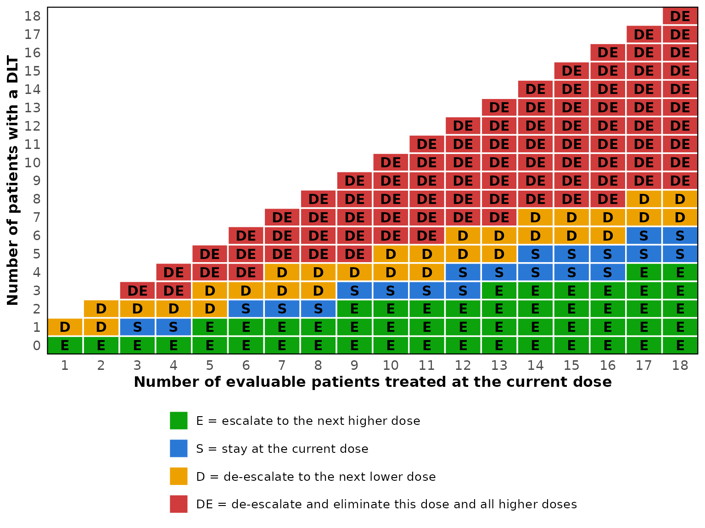

Getting started with simFastBOIN
Source:vignettes/simFastBOIN-introduction.Rmd
simFastBOIN-introduction.RmdWhat the package does
The Bayesian optimal interval (BOIN) design assigns a cohort of patients to a dose, counts how many experienced a dose-limiting toxicity, and compares the observed rate against two boundaries. If the rate is at or below the lower boundary the next cohort is escalated, if it reaches the upper boundary the next cohort is de-escalated, and otherwise the dose is repeated. The rule is as simple to run as a 3+3 design, and Liu and Yuan report average performance comparable to that of the continual reassessment method.
This package provides the boundaries, a fast simulation engine for
operating characteristics, and the MTD selection rule applied at the end
of a trial. The traditional 3+3 design is included as a comparator, so
the two can be tabulated side by side. For toxicity that appears late in
the assessment window, the time-to-event version of the design has a
vignette of its own, vignette("simFastBOIN-tite"), and so
do the designs that backfill patients to lower doses while the
escalation waits, vignette("simFastBOIN-backfill"), and the
design for trials of two drugs given together,
vignette("simFastBOIN-combination").
Decision boundaries
boin_lambda() returns the two interval boundaries, which
depend only on the target rate and the two thresholds around it.
boin_lambda(target = 0.30)
#> $lambda_e
#> [1] 0.2364907
#>
#> $lambda_d
#> [1] 0.3585195In practice the boundaries are used as whole numbers of toxicities.
boin_boundary() tabulates them, together with the
elimination boundary, for every attainable sample size at a dose.
bd <- boin_boundary(target = 0.30, max_n = 18, extrasafe = TRUE)
print(bd, cohort_size = 3)
#> BOIN decision boundaries
#> target DLT rate : 0.3
#> p_saf / p_tox : 0.18 / 0.42
#> lambda_e : 0.2365
#> lambda_d : 0.3585
#> cutoff_eli : 0.95
#> safety cutoff : 0.9
#>
#>
#> Number of patients treated 3 6 9 12 15 18
#> Escalate if # of DLT <= 0 1 2 2 3 4
#> Deescalate if # of DLT >= 2 3 4 5 6 7
#> Eliminate if # of DLT >= 3 4 5 7 8 9
#> Stop at lowest dose if # of DLT >= 2 4 5 6 7 8Reading the first column: with three patients treated, escalate on zero toxicities, de-escalate on two or more, and stay on exactly one.
The same information can be read as a table indexed by both counts. Printing it with a cohort size shows only the sample sizes that are actually reached.
decisions <- boin_decision_table(target = 0.30, max_n = 18)
print(decisions, cohort_size = 3)
#> Patients
#> DLTs 3 6 9 12 15 18
#> 0 E E E E E E
#> 1 S E E E E E
#> 2 D S E E E E
#> 3 DE D S S E E
#> 4 DE D S S E
#> 5 DE DE D S S
#> 6 DE DE D D S
#> 7 DE DE D D
#> 8 DE DE DE D
#> 9 DE DE DE DE
#> 10 DE DE DE
#> 11 DE DE DE
#> 12 DE DE DE
#> 13 DE DE
#> 14 DE DE
#> 15 DE DE
#> 16 DE
#> 17 DE
#> 18 DE
#>
#> E = escalate, S = stay, D = de-escalate, DE = de-escalate and eliminate this dose and aboveFor a protocol the table is usually easier to read as a picture. Every cell carries its decision letter, so the figure survives grayscale printing.
plot(decisions)
When extrasafe = TRUE there is a second, stricter rule
that applies at the lowest dose only. boin_stopping_table()
lays it out the same way.
boin_stopping_table(bd, cohort_size = 3)
#> 3 6 9 12 15 18
#> Number of evaluable patients treated at the lowest dose level 3 6 9 12 15 18
#> Stop the trial if # of DLT >= 2 4 5 6 7 8Operating characteristics for one scenario
sim_boin() simulates the design many times under an
assumed dose-toxicity curve and summarizes the result.
oc <- sim_boin(
target = 0.30,
p_true = c(0.05, 0.15, 0.30, 0.45, 0.60),
n_cohort = 10,
cohort_size = 3,
n_trials = 2000,
seed = 123
)
oc
#> BOIN operating characteristics
#> target DLT rate : 0.3
#> trials : 2000
#> cohorts : 10 of size 3
#> max sample size : 30
#> lambda_e / _d : 0.2365 / 0.3585
#>
#> DL1 DL2 DL3 DL4 DL5 Total / No MTD
#> True DLT rate (%) 5.0 15.0 30.0 45.0 60.0
#> MTD selected (%) 1.2 25.0 53.1 19.1 1.6 0.0
#> Patients treated 4.1 8.8 10.9 4.5 0.8 29.2
#> Patients with DLT 0.2 1.3 3.3 2.0 0.5 7.4
#>
#> Doses above a true DLT rate of 0.3: DL4, DL5
#> Patients treated there : 18.3%
#> Trials treating any patient there : 55.8%
#> Trials treating over 60% there : 2.1%
#> Trials treating over 80% there : 0%
#> Trials selecting an MTD there : 20.6%The third dose is the true MTD here, and it is the dose selected most often. The components of the result are available individually.
oc$sel_percent
#> DL1 DL2 DL3 DL4 DL5
#> 1.20 24.95 53.15 19.10 1.55
oc$percent_no_mtd
#> [1] 0.05
oc$overdose$pct_patients
#> [1] 18.30761Comparing scenarios
A design is judged across a range of plausible curves rather than
one. sim_boin_multi() runs the same design under several
scenarios and collects the results into one table.
scenarios <- list(
"MTD at dose 2" = c(0.15, 0.30, 0.45, 0.60, 0.75),
"MTD at dose 4" = c(0.02, 0.06, 0.15, 0.30, 0.50),
"All doses toxic" = c(0.40, 0.55, 0.65, 0.75, 0.85)
)
sim_boin_multi(
target = 0.30,
scenarios = scenarios,
n_cohort = 10,
cohort_size = 3,
n_trials = 2000,
seed = 123
)
#> BOIN operating characteristics across 3 scenarios
#> target DLT rate : 0.3
#> trials each : 2000
#> max sample size : 30
#>
#> Scenario Item DL1 DL2 DL3 DL4 DL5 Total / No MTD
#> MTD at dose 2 True DLT rate (%) 15.0 30.0 45.0 60.0 75.0
#> MTD selected (%) 23.8 55.9 17.2 1.6 0.0 1.5
#> Patients treated 9.1 12.2 5.4 0.9 0.0 27.6
#> Patients with DLT 1.3 3.7 2.5 0.5 0.0 8.1
#> MTD at dose 4 True DLT rate (%) 2.0 6.0 15.0 30.0 50.0
#> MTD selected (%) 0.0 1.6 23.4 62.3 12.7 0.0
#> Patients treated 3.2 4.2 8.2 10.1 4.0 29.8
#> Patients with DLT 0.1 0.3 1.2 3.0 2.1 6.7
#> All doses toxic True DLT rate (%) 40.0 55.0 65.0 75.0 85.0
#> MTD selected (%) 57.3 2.3 0.0 0.0 0.0 40.4
#> Patients treated 13.7 2.9 0.3 0.0 0.0 16.9
#> Patients with DLT 5.5 1.6 0.2 0.0 0.0 7.3Design options
Five options change how the design behaves.
titration = TRUE treats one patient per dose until the
first toxicity, which moves through safe doses quickly.
safe_curve <- c(0.01, 0.02, 0.05, 0.12, 0.30)
plain <- sim_boin(target = 0.30, p_true = safe_curve, n_cohort = 12,
cohort_size = 3, n_trials = 1000, seed = 1)
titrated <- sim_boin(target = 0.30, p_true = safe_curve, n_cohort = 12,
cohort_size = 3, n_trials = 1000, titration = TRUE, seed = 1)
rbind(plain = plain$n_pts_dose, titrated = titrated$n_pts_dose)
#> DL1 DL2 DL3 DL4 DL5
#> plain 3.099 3.285 3.888 8.136 14.976
#> titrated 1.063 1.164 1.736 7.516 15.997extrasafe = TRUE adds a stopping rule at the lowest dose
that is easier to trigger than elimination, and
bound_mtd = TRUE refuses to select a dose whose estimated
toxicity exceeds the de-escalation boundary.
toxic_curve <- c(0.35, 0.45, 0.55, 0.65, 0.75)
c(
plain = sim_boin(target = 0.30, p_true = toxic_curve, n_cohort = 12,
cohort_size = 3, n_trials = 1000, seed = 2)$percent_no_mtd,
extrasafe = sim_boin(target = 0.30, p_true = toxic_curve, n_cohort = 12,
cohort_size = 3, n_trials = 1000, extrasafe = TRUE,
seed = 2)$percent_no_mtd
)
#> plain extrasafe
#> 24.5 43.3n_earlystop stops a trial once the current dose has
accrued this many patients and the design would stay there, which is
taken as a sign that the algorithm has settled. It defaults to 18. Note
that the reference implementation in the BOIN package defaults to 100,
which effectively switches the rule off, so a comparison between the two
should set it explicitly.
For some target rates one DLT out of three patients de-escalates the
dose, where the 3+3 design would stay.
stay_on_1_of_3 = TRUE aligns the design with that practice
by raising the de-escalation boundary at three patients, which changes
one cell of the table and nothing else.
c(default = boin_decision_table(0.25, 9)["1", "3"],
modified = boin_decision_table(0.25, 9, stay_on_1_of_3 = TRUE)["1", "3"])
#> default modified
#> "D" "S"Working with the trial data
boin_simulate() returns the raw counts, which is useful
when a summary other than the built-in one is needed.
trials <- boin_simulate(
target = 0.30,
p_true = c(0.05, 0.15, 0.30, 0.45, 0.60),
n_cohort = 10,
cohort_size = 3,
n_trials = 1000,
seed = 123
)
trials
#> Simulated BOIN trials
#> trials : 1000
#> doses : 5
#> target DLT rate : 0.3
#> cohorts : 10 of size 3
#> max sample size : 30
#>
#> Average per trial:
#> DL1 DL2 DL3 DL4 DL5
#> Patients treated 4.17 8.90 10.78 4.49 0.77
#> DLTs observed 0.22 1.37 3.21 2.05 0.46
#>
#> Stopping reason (%):
#>
#> lowest_dose_eliminated max_sample_size n_earlystop
#> 0.1 79.3 20.6The MTD selection rule can then be applied separately, which makes it possible to compare selection rules on one set of simulated trials.
free <- boin_select_mtd(trials$n_pts, trials$n_tox, target = 0.30)
bounded <- boin_select_mtd(trials$n_pts, trials$n_tox, target = 0.30,
bound_mtd = TRUE)
table(free$mtd, bounded$mtd, useNA = "ifany")
#>
#> 1 2 3 4 5 <NA>
#> 1 12 0 0 0 0 0
#> 2 4 242 0 0 0 0
#> 3 0 92 449 0 0 0
#> 4 0 0 60 125 0 0
#> 5 0 0 0 7 8 0
#> <NA> 0 0 0 0 0 1The estimated dose-toxicity curve behind those decisions is available on its own.
round(boin_isotonic(trials$n_pts[1:5, ], trials$n_tox[1:5, ]), 3)
#> DL1 DL2 DL3 DL4 DL5
#> [1,] 0.016 0.017 0.017 0.334 NA
#> [2,] 0.016 0.224 0.664 NA NA
#> [3,] 0.016 0.172 0.225 0.500 NA
#> [4,] 0.016 0.172 0.172 0.172 0.445
#> [5,] 0.016 0.058 0.664 NA NAComparing with the 3+3 design
oc_3p3() gives the operating characteristics of the
traditional 3+3 design. The probability of every path the design can
take is evaluated in closed form, so the result carries no Monte Carlo
error and takes no seed.
oc_3p3(p_true = c(0.05, 0.15, 0.25, 0.45, 0.60))
#> 3+3 operating characteristics
#> MTD rule : previous (dose below the toxic one)
#> obtained by : exact enumeration
#> start dose : DL1
#> max sample size : 30 (six per dose)
#>
#> DL1 DL2 DL3 DL4 DL5 Total / No MTD
#> True DLT rate (%) 5.0 15.0 25.0 45.0 60.0
#> MTD selected (%) 18.1 31.7 36.4 10.2 0.9 2.7
#> Patients treated 3.4 3.9 3.4 2.0 0.4 13.1
#> Patients with DLT 0.2 0.6 0.8 0.9 0.3 2.8
#>
#> Doses above a true DLT rate of 0.3333: DL4, DL5
#> Patients treated there : 18.6%
#> Trials treating any patient there : 47.5%
#> Trials selecting an MTD there : 11.1%Two definitions of the MTD are in common use and
mtd_rule chooses between them. The default,
"previous", names the dose below the one declared too
toxic. The other takes the MTD to be the highest dose at which at most
one of six patients had a DLT, expanding a dose that has only three
patients before assessing it.
expanded <- oc_3p3(p_true = c(0.05, 0.15, 0.25, 0.45, 0.60),
mtd_rule = "expand")
round(expanded$sel_percent, 1)
#> [1] 19.7 34.4 35.3 7.5 0.5
round(expanded$total_n_pts, 2)
#> [1] 15.52The components of the result carry the same names as those of
sim_boin(), so the same code can tabulate either design.
sim_3p3() simulates the same design and exists to confirm
the closed form rather than to obtain the numbers.
decision_table_3p3() shows the rule itself. With
mtd_rule = "expand" it also lists the search for the MTD
that follows escalation.
decision_table_3p3(mtd_rule = "expand")
#> 3+3 decision table, MTD rule: expand (the highest dose with at most 1 DLT in 6)
#>
#> Dose escalation
#> Patients DLTs Decision
#> 3 0 Escalate
#> 3 1 Treat 3 more patients at this dose
#> 3 >= 2 Stop escalation
#> 6 <= 1 Escalate
#> 6 >= 2 Stop escalation
#>
#> Search for the MTD
#> Patients DLTs Decision
#> 3 0 Treat 3 more patients at this dose
#> 6 <= 1 Select this dose as the MTD
#> 6 >= 2 Move to the next lower dose
#>
#> Stop escalation means that this dose and all higher doses are too
#> toxic. The search for the MTD starts at the dose below the one at which
#> escalation stopped, or at the highest dose when it is escalated from.
#> No MTD is selected when the search moves below the starting dose.Agreement with the BOIN package
The engine draws one uniform variate per patient, in enrollment
order, and applies the decision rules in the order used by
BOIN::get.oc(). With the same seed and matching arguments
the two implementations agree trial by trial, not merely on average. The
package’s test suite checks this directly whenever the BOIN package is
installed, and inst/validation/compare-with-BOIN.R runs the
same comparison over 200 configurations covering every combination of
the options the two packages share.
reference <- BOIN::get.oc(
target = 0.30, p.true = c(0.05, 0.15, 0.25, 0.45, 0.60),
ncohort = 20, cohortsize = 3, n.earlystop = 18,
ntrial = 1000, seed = 6
)
ours <- sim_boin(
target = 0.30, p_true = c(0.05, 0.15, 0.25, 0.45, 0.60),
n_cohort = 20, cohort_size = 3, n_earlystop = 18,
n_trials = 1000, seed = 6
)
all.equal(unname(ours$sel_percent), reference$selpercent)
all.equal(unname(ours$n_pts_dose), reference$npatients)References
Liu S. and Yuan, Y. (2015). Bayesian Optimal Interval Designs for Phase I Clinical Trials. Journal of the Royal Statistical Society: Series C, 64, 507-523.
Yan, F., Zhang, L., Zhou, Y., Pan, H., Liu, S. and Yuan, Y. (2020). BOIN: An R Package for Designing Single-Agent and Drug-Combination Dose-Finding Trials Using Bayesian Optimal Interval Designs. Journal of Statistical Software, 94(13), 1-32.